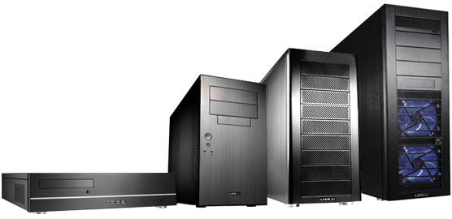

Picking out the perfect tower.
One of the first steps to building a computer is picking out the case it will be all put into know as the tower. These come in a range of sizes smallest(mini-ITX), small (micro ATX), medium (ATX) and full size (EATX). Once you pin point how much space you would like for your computer build now it is time to pinpoint the price range you want to spend on the case. Typically cases of all sizes can range from $150 USD and can get as expensive as $600! They all have their bells and whistles, like flashy lights, plnety of buttons, metal exteriors, certain colors, and glass sides. All of these features add to the ultimant asthetic of the tower and computer build but ulitmantly you will pay for the prettiness.
Here are the differnt sizes of cases
A computer being built!

Video describing how to pick out a case!